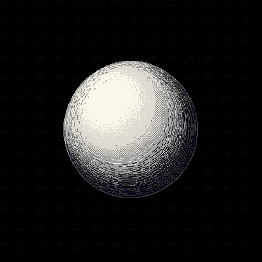
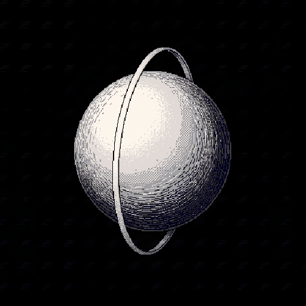
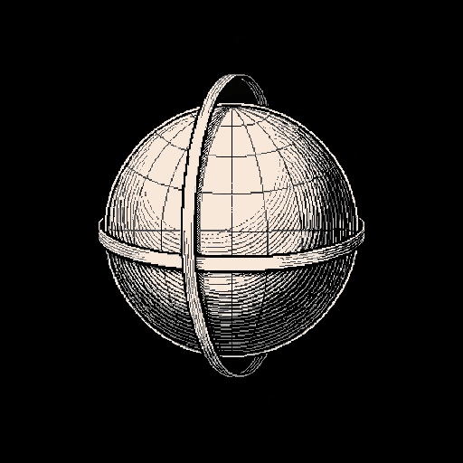
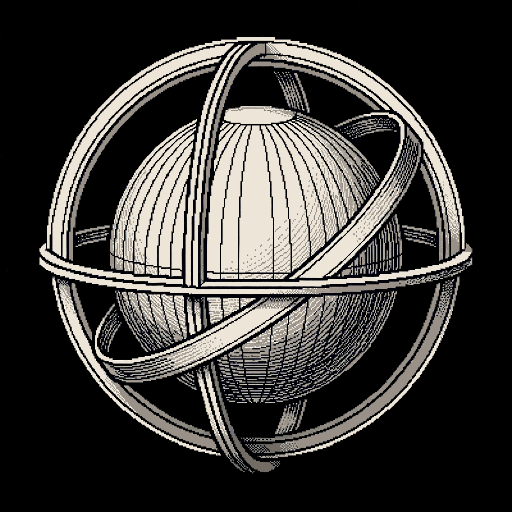
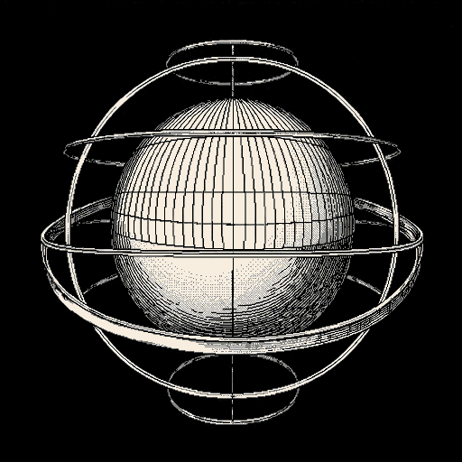

1. NúcleoGlobo gravado, sem estrutura externa.
2. MeridianoPrimeiro aro vertical envolvendo o núcleo.
3. EquadorMeridiano e faixa equatorial.
4. ÓrbitasÓrbita oblíqua e coordenadas celestes.
5. Plenitude ArmilarEstrutura armilar completa, com anéis polares.